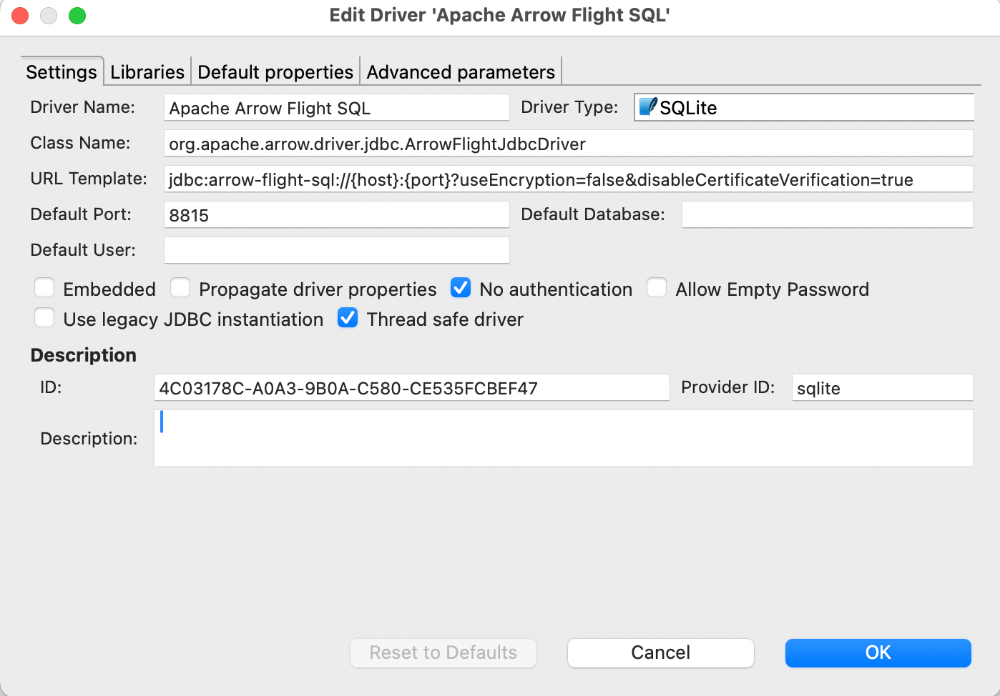
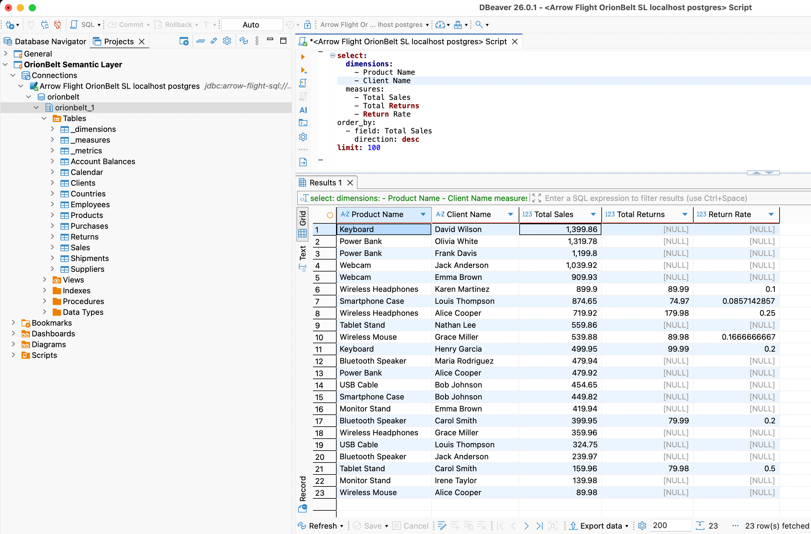
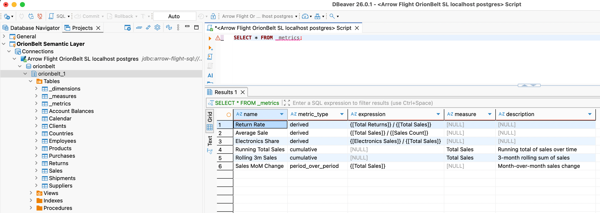

DB-API 2.0 Drivers & Arrow Flight SQL¶
OrionBelt provides PEP 249 DB-API 2.0 drivers for 8 databases and an Arrow Flight SQL server extension that enables BI tools like DBeaver, Tableau, and Power BI to run OBML queries directly.
All drivers work against the OrionBelt REST API in admin-curated mode (MODEL_FILES=<path>). OBML queries are compiled transparently via POST /v1/query/sql — the user writes OBML, the driver returns SQL results.
Package Overview¶
| Package | Database | Native Connector | Dialect | paramstyle | Arrow Support |
|---|---|---|---|---|---|
ob-driver-core |
— | — | — | — | — |
ob-bigquery |
BigQuery | google-cloud-bigquery |
bigquery |
pyformat |
to_arrow() |
ob-duckdb |
DuckDB | duckdb |
duckdb |
qmark |
fetch_arrow_table() |
ob-postgres |
PostgreSQL | adbc-driver-postgresql |
postgres |
qmark |
ADBC native |
ob-snowflake |
Snowflake | snowflake-connector-python |
snowflake |
pyformat |
fetch_arrow_all() |
ob-clickhouse |
ClickHouse | clickhouse-connect |
clickhouse |
pyformat |
query_arrow() |
ob-dremio |
Dremio | pyarrow.flight |
dremio |
qmark |
Flight native |
ob-databricks |
Databricks | databricks-sql-connector |
databricks |
pyformat |
fetchall_arrow() |
ob-flight-extension |
Arrow Flight SQL server | pyarrow.flight |
all | — | — |
ob-driver-core is the shared foundation — PEP 249 exceptions, type codes, OBML detection, and the REST compilation bridge. All vendor drivers depend on it.
How Drivers Work¶
Your Python App OrionBelt API Database
┌───────────────┐ HTTP ┌───────────────┐
│ import ob_* │ ─────────► │ /v1/query/sql │ OBML → SQL
│ │ ◄───────── │ (MODEL_FILES) │
│ cursor │ └───────────────┘
│ .execute() │ native protocol
│ .fetchall() │ ─────────────────────────────► Snowflake / PG / ...
└───────────────┘
cur.execute(query)checks if the query is OBML (starts withselect:+ hasdimensions/measures)- If OBML: sends
POST /v1/query/sql?dialect=<vendor>to the API, gets back compiled SQL - Executes the compiled SQL on the database via the native connector
- Plain SQL queries bypass the API entirely
Prerequisites¶
The OrionBelt REST API must be running with at least one model preloaded:
# Multi-model (preferred): name each model with the OBML `name:` field
MODEL_FILES=models/sales.obml.yaml,models/marketing.obml.yaml uv run orionbelt-api
The driver picks a model via the database parameter (matches the OBML name:). With a single file loaded, the /v1/query/sql shortcut auto-resolves it without a database hint.
Usage Examples¶
DuckDB (in-process, no server needed)¶
import ob_duckdb
conn = ob_duckdb.connect(database=":memory:")
with conn.cursor() as cur:
# OBML query — compiled via API, executed on DuckDB
cur.execute("""
select:
dimensions:
- Region
measures:
- Revenue
limit: 10
""")
print(cur.fetchall())
# Plain SQL — executed directly, no API call
cur.execute("SELECT * FROM orders LIMIT 5")
print(cur.fetchall())
PostgreSQL¶
import ob_postgres
conn = ob_postgres.connect(
host="db.example.com",
port=5432,
dbname="analytics",
user="app",
password="secret",
)
with conn.cursor() as cur:
cur.execute("""
select:
dimensions:
- Country
measures:
- Revenue
- Order Count
""")
for row in cur:
print(row)
Snowflake¶
import ob_snowflake
conn = ob_snowflake.connect(
account="xy12345",
user="svc_orionbelt",
password="secret",
database="ANALYTICS",
schema="PUBLIC",
warehouse="COMPUTE_WH",
)
with conn.cursor() as cur:
cur.execute("select:\n measures:\n - Revenue\n")
print(cur.fetchone())
ClickHouse¶
import ob_clickhouse
conn = ob_clickhouse.connect(
host="clickhouse.example.com",
port=8123,
username="default",
password="secret",
database="analytics",
)
with conn.cursor() as cur:
cur.execute("select:\n dimensions:\n - Region\n measures:\n - Revenue\n")
print(cur.fetchall())
Databricks¶
import ob_databricks
conn = ob_databricks.connect(
server_hostname="adb-1234567890.azuredatabricks.net",
http_path="/sql/1.0/warehouses/abc123",
access_token="dapi...",
catalog="hive_metastore",
schema="default",
)
with conn.cursor() as cur:
cur.execute("select:\n dimensions:\n - Region\n measures:\n - Revenue\n")
print(cur.fetchall())
Dremio¶
import ob_dremio
conn = ob_dremio.connect(
host="dremio.example.com",
port=32010,
username="user",
password="secret",
tls=True,
)
with conn.cursor() as cur:
cur.execute("select:\n dimensions:\n - Region\n measures:\n - Revenue\n")
print(cur.fetchall())
Custom API URL¶
All drivers default to http://localhost:8000. Override with ob_api_url:
connect() Parameters¶
Common OrionBelt parameters (all drivers)¶
| Parameter | Default | Description |
|---|---|---|
ob_api_url |
http://localhost:8000 |
OrionBelt REST API URL |
ob_timeout |
30 |
HTTP timeout (seconds) for OBML compilation |
Vendor-specific parameters¶
| Driver | Parameters |
|---|---|
ob-duckdb |
database (:memory:), read_only, config |
ob-postgres |
dsn, host, port, dbname, user, password, sslmode |
ob-snowflake |
account, user, password, database, schema, warehouse, role, authenticator |
ob-clickhouse |
host, port, username, password, database, secure |
ob-dremio |
host, port, username, password, tls |
ob-databricks |
server_hostname, http_path, access_token, catalog, schema |
Running Driver Tests¶
Drivers are workspace packages. Tests run without external services — all native connectors and the REST API are mocked:
# Individual driver
uv run --package ob-duckdb --with pytest python -m pytest drivers/ob-duckdb/tests/ -v
# All drivers
for pkg in ob-driver-core ob-bigquery ob-duckdb ob-postgres ob-snowflake ob-clickhouse ob-dremio ob-databricks ob-flight-extension; do
echo "=== $pkg ==="
uv run --package $pkg --with pytest python -m pytest drivers/$pkg/tests/ -v
done
Arrow Flight SQL Server¶
The ob-flight-extension package adds an Arrow Flight SQL endpoint to the OrionBelt API. This enables BI tools that support the Arrow Flight protocol — DBeaver, Tableau (via JDBC), Power BI (via ODBC bridge) — to run OBML queries directly.
Architecture¶
DBeaver / Tableau / Power BI
│ Arrow Flight (gRPC, port 8815)
▼
┌────────────────────────────────┐
│ OrionBelt API │
│ ├── REST API (:8080) │ FastAPI endpoints
│ └── Flight SQL (:8815) │ Arrow Flight server (daemon thread)
│ ├── OBML detection │
│ ├── CompilationPipeline │ (direct, no HTTP hop)
│ └── Vendor driver │ executes compiled SQL
└────────────┬───────────────────┘
│ outbound TCP/HTTPS
▼
Snowflake / PostgreSQL / ClickHouse / Databricks / Dremio / DuckDB
(cloud or on-premise, wherever the database is)
The Flight server runs inside the API process as a daemon thread — it uses the CompilationPipeline directly (no REST call for compilation) and executes queries via the OB vendor drivers.
Configuration¶
All settings are in .env (or environment variables). Pydantic-settings reads them automatically.
# .env
# --- Core API (unchanged) ---
MODEL_FILES=models/sales.obml.yaml
API_SERVER_PORT=8000
LOG_LEVEL=INFO
# --- Arrow Flight SQL ---
FLIGHT_ENABLED=true
FLIGHT_PORT=8815
FLIGHT_AUTH_MODE=none # "none" or "token"
# FLIGHT_API_TOKEN=changeme # required when FLIGHT_AUTH_MODE=token
# --- Database vendor ---
DB_VENDOR=postgres # which driver to use for query execution
# --- Vendor credentials (match DB_VENDOR) ---
POSTGRES_HOST=db.example.com
POSTGRES_PORT=5432
POSTGRES_DBNAME=analytics
POSTGRES_USER=app
POSTGRES_PASSWORD=secret
Settings Reference¶
| Variable | Default | Description |
|---|---|---|
FLIGHT_ENABLED |
false |
Enable the Flight SQL server |
FLIGHT_PORT |
8815 |
gRPC listen port |
FLIGHT_AUTH_MODE |
none |
none (open) or token (static bearer) |
FLIGHT_API_TOKEN |
— | Required when FLIGHT_AUTH_MODE=token |
DB_VENDOR |
duckdb |
Default vendor driver for query execution |
DB_VENDOR and Credentials¶
DB_VENDOR selects which database driver the Flight server uses to execute compiled SQL:
| DB_VENDOR | Driver | Credential Environment Variables |
|---|---|---|
duckdb |
ob-duckdb | DUCKDB_DATABASE |
postgres |
ob-postgres | POSTGRES_HOST, POSTGRES_PORT, POSTGRES_DBNAME, POSTGRES_USER, POSTGRES_PASSWORD |
snowflake |
ob-snowflake | SNOWFLAKE_ACCOUNT, SNOWFLAKE_USER, SNOWFLAKE_PASSWORD, SNOWFLAKE_DATABASE, SNOWFLAKE_SCHEMA, SNOWFLAKE_WAREHOUSE |
clickhouse |
ob-clickhouse | CLICKHOUSE_HOST, CLICKHOUSE_PORT, CLICKHOUSE_USERNAME, CLICKHOUSE_PASSWORD, CLICKHOUSE_DATABASE |
dremio |
ob-dremio | DREMIO_HOST, DREMIO_PORT, DREMIO_USERNAME, DREMIO_PASSWORD |
databricks |
ob-databricks | DATABRICKS_SERVER_HOSTNAME, DATABRICKS_HTTP_PATH, DATABRICKS_ACCESS_TOKEN |
Running Locally¶
uv sync
# Start API + Flight SQL
FLIGHT_ENABLED=true MODEL_FILES=models/sales.obml.yaml uv run orionbelt-api
Or with a .env file:
Docker¶
Use Dockerfile.flight for on-premise deployments with Flight SQL enabled:
# Build
docker build -f Dockerfile.flight -t orionbelt-flight .
# Run with .env file
docker run -p 8080:8080 -p 8815:8815 \
--env-file .env \
-v ./models:/models:ro \
orionbelt-flight
Or with explicit environment variables:
docker run -p 8080:8080 -p 8815:8815 \
-e MODEL_FILES=/models/sales.obml.yaml \
-e FLIGHT_ENABLED=true \
-e DB_VENDOR=snowflake \
-e SNOWFLAKE_ACCOUNT=xy12345 \
-e SNOWFLAKE_USER=svc_orionbelt \
-e SNOWFLAKE_PASSWORD=secret \
-e SNOWFLAKE_DATABASE=ANALYTICS \
-e SNOWFLAKE_SCHEMA=PUBLIC \
-e SNOWFLAKE_WAREHOUSE=COMPUTE_WH \
-v ./models:/models:ro \
orionbelt-flight
The container makes outbound connections to the database — no extra port mapping needed for that. Works with cloud databases (Snowflake, Databricks, etc.) out of the box.
Docker Compose¶
services:
orionbelt:
build:
dockerfile: Dockerfile.flight
ports:
- "8080:8080" # REST API
- "8815:8815" # Flight SQL
env_file: .env
volumes:
- ./models:/models:ro
restart: unless-stopped
# Optional: local PostgreSQL for development
postgres:
image: postgres:16
environment:
POSTGRES_DB: analytics
POSTGRES_USER: app
POSTGRES_PASSWORD: secret
ports:
- "5432:5432"
With .env:
MODEL_FILES=/models/sales.obml.yaml
FLIGHT_ENABLED=true
DB_VENDOR=postgres
POSTGRES_HOST=postgres
POSTGRES_PORT=5432
POSTGRES_DBNAME=analytics
POSTGRES_USER=app
POSTGRES_PASSWORD=secret
Cloud Run¶
The Flight extension is not needed for Cloud Run deployments. Cloud Run uses the original Dockerfile (REST API only). The Flight SQL server is designed for on-premise or hybrid deployments where BI tools need direct database access via Arrow Flight.
DBeaver Setup¶
- Download the Arrow Flight SQL JDBC driver JAR (19.0.0 or newer) and install in Driver Manager:

- New Connection > Apache Arrow Flight SQL
- Host: your Docker host IP or
localhost - Port:
8815 - Database (multi-model only): the model name (one of
GET /v1/models). Leave empty in single-model mode — auto-resolve picks the only loaded model. The driver maps this field to the gRPCdatabasemetadata header. - Authentication: leave empty (or use token if
FLIGHT_AUTH_MODE=token) - Test Connection > should show "Connected",
Server: OrionBelt Semantic Layer, and the driver version. - In the SQL editor, write OrionBelt Semantic QL:
-- aggregate, FROM the model's virtual table (or omit FROM entirely)
SELECT "Region", "Total Sales"
FROM sales
WHERE "Year" = 2025
ORDER BY "Total Sales" DESC
LIMIT 100
-- hierarchical subtotals
SELECT "Region", "Country", "Total Sales"
FROM sales
WITH ROLLUP
-- detail rows (raw mode) via qualified `"DataObject"."column"` refs
SELECT "Customers"."Customer Name", "Customers"."Country"
FROM sales
LIMIT 100
Each loaded model appears in the schema browser as its own schema
(orionbelt.<model_name>) containing a virtual table named model
(columns = all dimensions + measures + metrics) and six introspection
views: dimensions / measures / metrics for BI-tool picker side
panels (one column per label) and _dimensions_metadata /
_measures_metadata / _metrics_metadata for full attribute rows
(name, data object, type, time grain, description, …). SHOW TABLES,
DESCRIBE, information_schema.*, and pg_catalog.* queries are
answered from the model and never touch the warehouse.

You can also query the virtual OBML tables:

Troubleshooting¶
| Symptom | Fix |
|---|---|
| "Cannot cast GenericDataSource to SQLiteDataSource" | DBeaver workspace stored the connection with the wrong provider (often after a DBeaver upgrade). Delete the connection and recreate it from scratch via Database → New Database Connection → Apache Arrow Flight SQL. Don't edit the workspace JSON in place. |
| "No suitable driver found for jdbc:arrow-flight-sql://..." | The Arrow Flight SQL driver lost its class registration. Database → Driver Manager → Apache Arrow Flight SQL → Edit → Libraries → re-download the JAR (19.0.0+), then use Find Class to re-register org.apache.arrow.driver.jdbc.ArrowFlightJdbcDriver. |
Server: ? in the connection-test dialog |
Server is on an older OBSL build that didn't populate CommandGetSqlInfo. Upgrade to v2.4.0+ — DBeaver will then show Server: OrionBelt Semantic Layer. |
[NO_MODEL_SELECTED] on connect |
Multiple models are loaded and you didn't set Database. Either set it to one of the names from GET /v1/models, or restart the server with a single model. |
[RAW_SQL_REJECTED] on a query you think is valid |
OBSL is a semantic layer — SELECT * FROM <physical_table> is rejected by design. Use the model's virtual table name (or omit FROM) and reference dim/measure labels. There is no flag to enable raw SQL. |
| Smoke-test without DBeaver | Run uv run python examples/obsql.py 'SELECT version()' — same Flight surface, no GUI dependencies. |
Tableau Setup¶
- Download the Arrow Flight SQL JDBC driver JAR
- Connect > Other Databases (JDBC)
- URL:
jdbc:arrow-flight-sql://host:8815?useEncryption=false - Use Custom SQL with OBML query or plain SQL